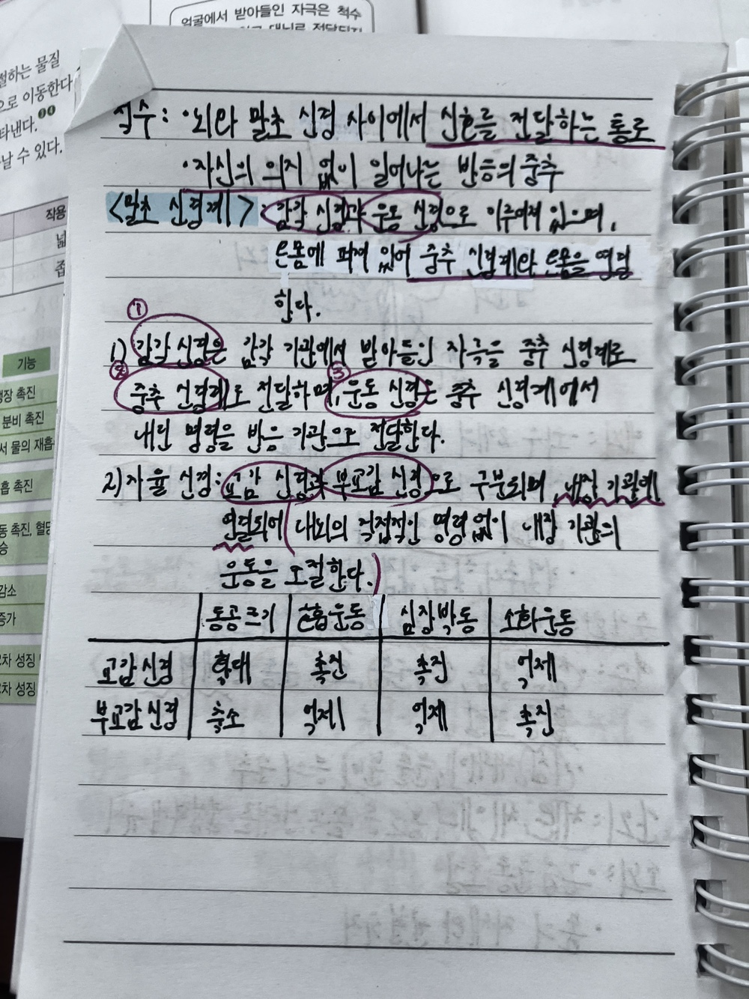
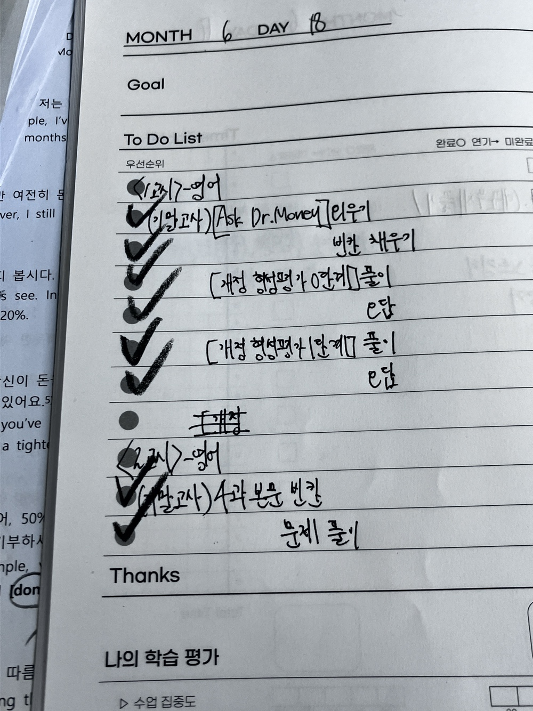
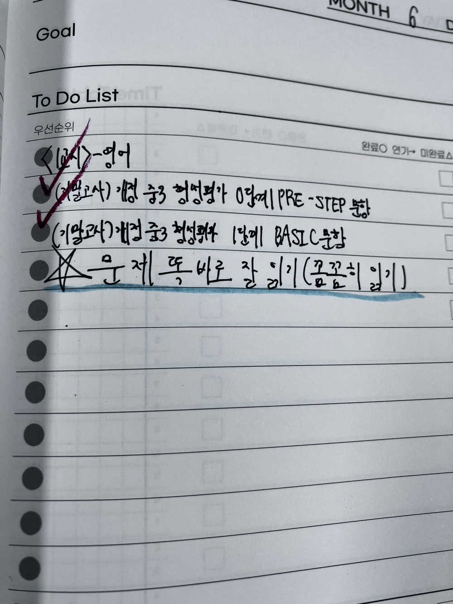

안녕하세요, 강서구 염창동 와와학습코칭 염창점입니다. 이번 주 저희 센터의 영어·수학 수업 현황을 학부모님들께 전해드립니다. 염경초, 염동초, 백석초 학생들이 어떤 분위기에서 스스로 공부하는 힘을 키워가고 있는지 담았습니다.
기초부터 탄탄하게
초등 시기의 공부 습관은 이후 모든 학습의 바탕이 됩니다. 그래서 염창점은 기초 개념과 학습 습관을 가장 중요하게 봅니다. 이번 주에도 학생들은 배운 내용을 스스로 설명해 보며, 이해가 덜 된 부분을 코치 선생님과 함께 다시 짚었습니다.
영어는 문장을 스스로 읽고 해석하는 힘을, 수학은 개념을 정확히 이해하고 문제에 적용하는 힘을 기르는 데 집중했습니다.

스스로 계획하고 점검하기
와와의 핵심은 자기주도학습입니다. 염창점 학생들은 매일 등원하면 오늘 할 일을 스스로 정하고, 하원 전에 코치 선생님과 그날의 학습을 점검합니다.
- 하루 할 일을 3가지 이내로 좁혀 성공 경험 쌓기
- 시간이 아니라 '분량'으로 목표 정하기
- 해낸 것은 눈에 보이게 체크하기

공부가 즐거워지는 경험
처음에는 어색해하던 학생들도, 작은 성공이 반복되면 공부를 대하는 태도가 달라집니다. "이제 뭘 해야 할지 알겠어요"라고 말하는 학생이 늘어나는 것 — 그것이 염창점이 만드는 진짜 변화입니다. 앞으로도 아이 한 명 한 명의 성장을 곁에서 함께하겠습니다.
와와학습코칭 염창점 인근 학교
염창동 와와학습코칭(와와학습코칭 염창점)은 인근 학교 학생들의 학습을 함께합니다. 아래 학교에 다니는 학생이라면 영어학원·수학학원·국어학원을 따로 찾을 필요 없이, 가까운 우리 센터에서 과목별 1:1 자기주도학습 코칭을 받을 수 있습니다.
- 인근 초등학교 — 염경초등학교, 염동초등학교, 백석초등학교 영어학원·수학학원·국어학원